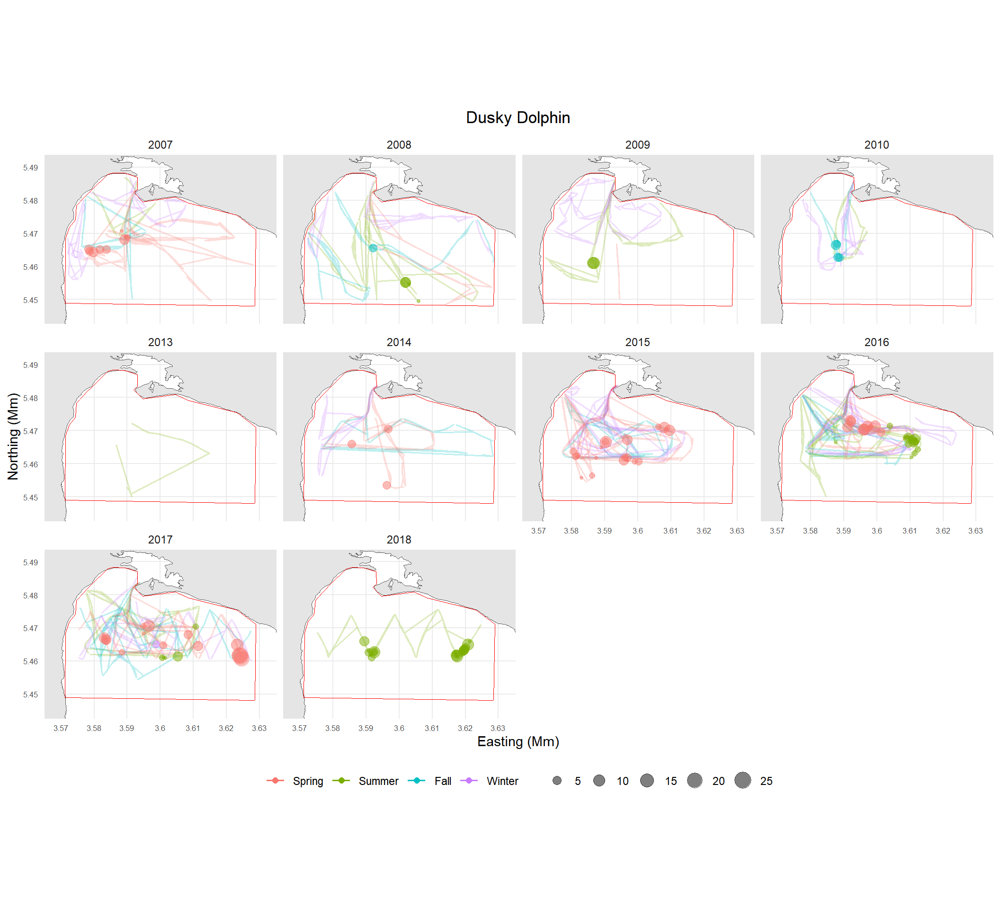
Delfines Oscuros
1 Censos
Muchos censos en embarcaciones de oportunidad.
Número de censos por año y estación
| Ano | Spring | Summer | Fall | Winter | TOTAL |
|---|---|---|---|---|---|
| 2007 | 3 | 1 | 2 | 5 | 11 |
| 2008 | 1 | 2 | 3 | 3 | 9 |
| 2009 | 1 | 2 | 0 | 3 | 6 |
| 2010 | 0 | 1 | 1 | 2 | 4 |
| 2013 | 0 | 1 | 0 | 0 | 1 |
| 2014 | 2 | 0 | 1 | 2 | 5 |
| 2015 | 4 | 0 | 2 | 6 | 12 |
| 2016 | 3 | 5 | 4 | 5 | 17 |
| 2017 | 3 | 3 | 3 | 2 | 11 |
| 2018 | 0 | 1 | 0 | 0 | 1 |
Presencia principalmente en primavera y verano.
| season | n.delfines |
|---|---|
| Spring | 304 |
| Summer | 203 |
| Fall | 22 |
| Winter | 3 |
Grupos pequeños
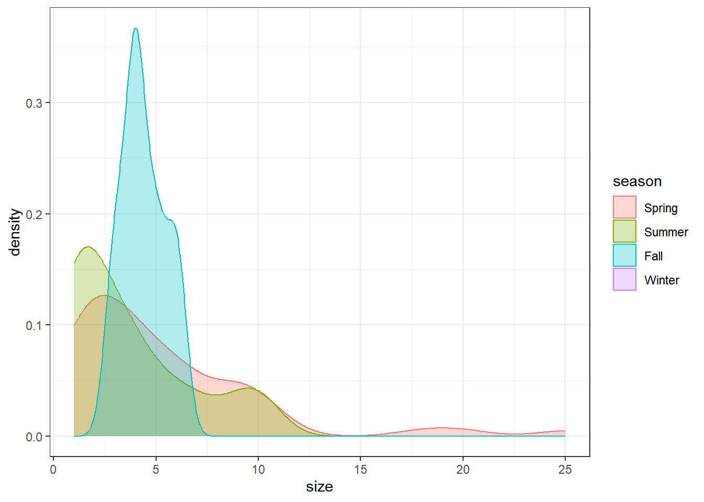
| season | min_group | max_group | mean_group | CV_group |
|---|---|---|---|---|
| Spring | 1 | 25 | 5.2 | 0.9 |
| Summer | 1 | 10 | 3.7 | 0.8 |
| Fall | 3 | 6 | 4.4 | 0.3 |
| Winter | 3 | 3 | 3.0 | NA |
2 Exploratory Data Analysis
2.1 Efecto de barco
2.1.1 Distancia
Hay efecto del barco sobre la distancia a la que se detectan delfines comunes. Considerar incluir en la funcion de deteccion.
Quizás sea efecto del observador en lugar de embarcación, pero no lo podemos distinguir porque no tenemos el ID del observador en los datos.
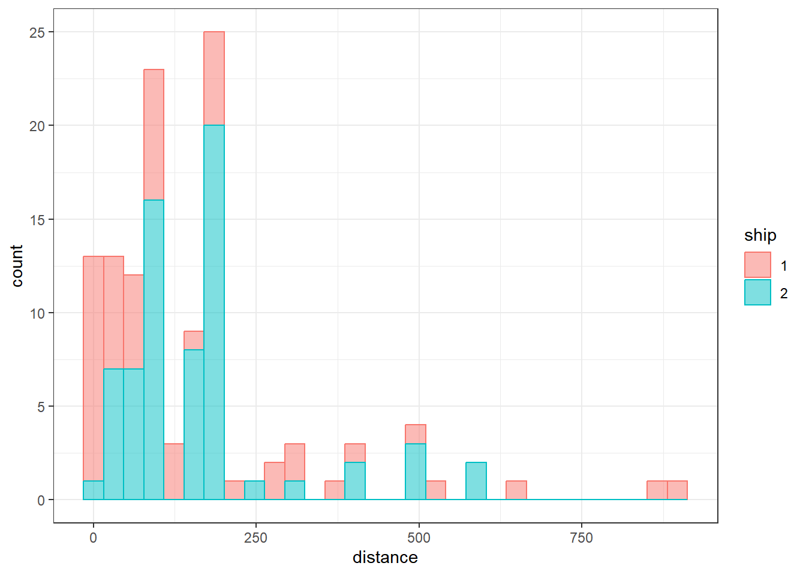
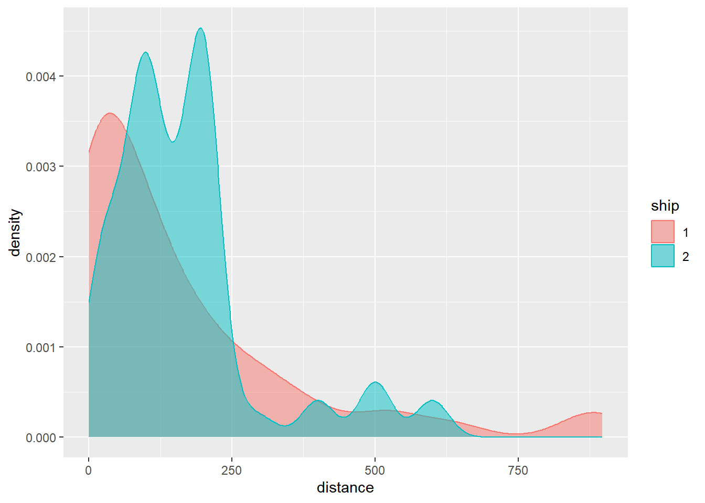
Tamaño muestral, discrimando por embarcación
| ship | n |
|---|---|
| 1 | 51 |
| 2 | 68 |
2.1.2 Tamaño grupal
Barco no parece tener efecto sobre el tamaño grupal detectado
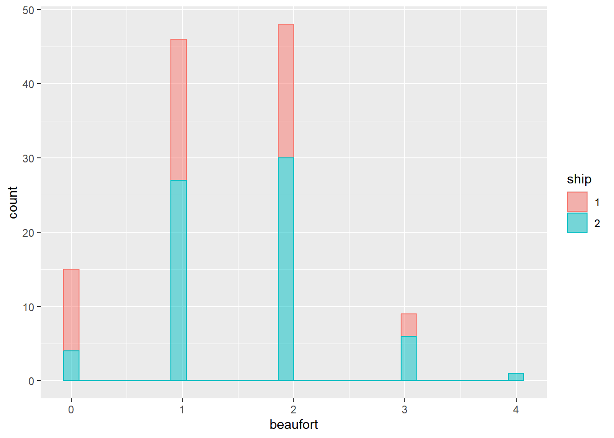

2.2 Estado del mar
2.2.1 Barco
No hay diferencias en el estado del mar en el que se hicieron censos, dependiendo del barco


2.2.2 Distancia
Hay una observacion en Beaufort 4 - considerar descartarla
Hay 2 registros en Beaufort 3 (embarcación 1) a mucha distancia.
Silvana: esto es real? o hay algún problema con los datos?
En caso de incluir Beaufort en la función de detección, probablemente lo mejor sería descartar estos 2 registros - eliminados al truncar los datos
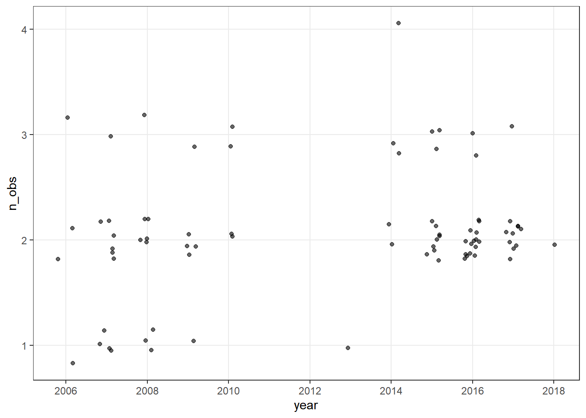
2.3 Variables espaciales
2.3.1 Escala: periodo
2.3.1.1 Profundidad
Parece haber mayor cantidad de detecciones en la zona donde aumenta la profundidad - alrededor de northing 5.47 Mm
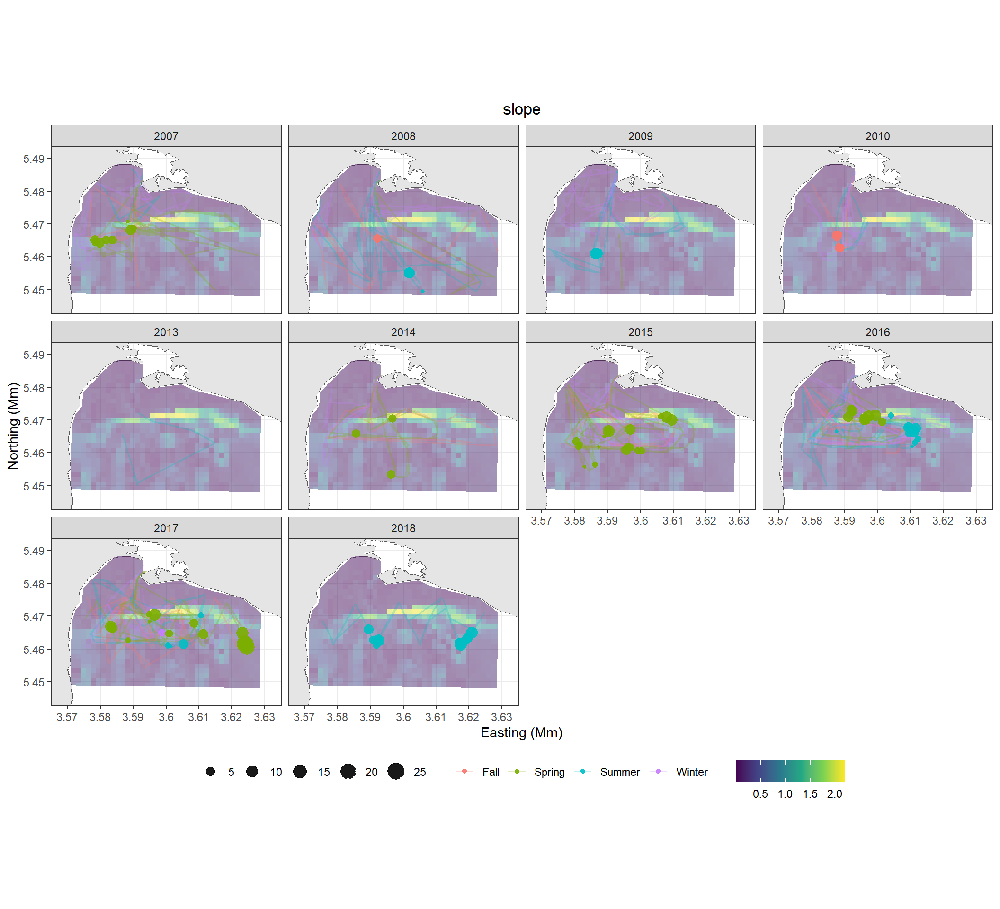
2.3.1.2 Pendiente
La zona donde hay mas detecciones parece ser donde hay una pendiente mas pronunciada
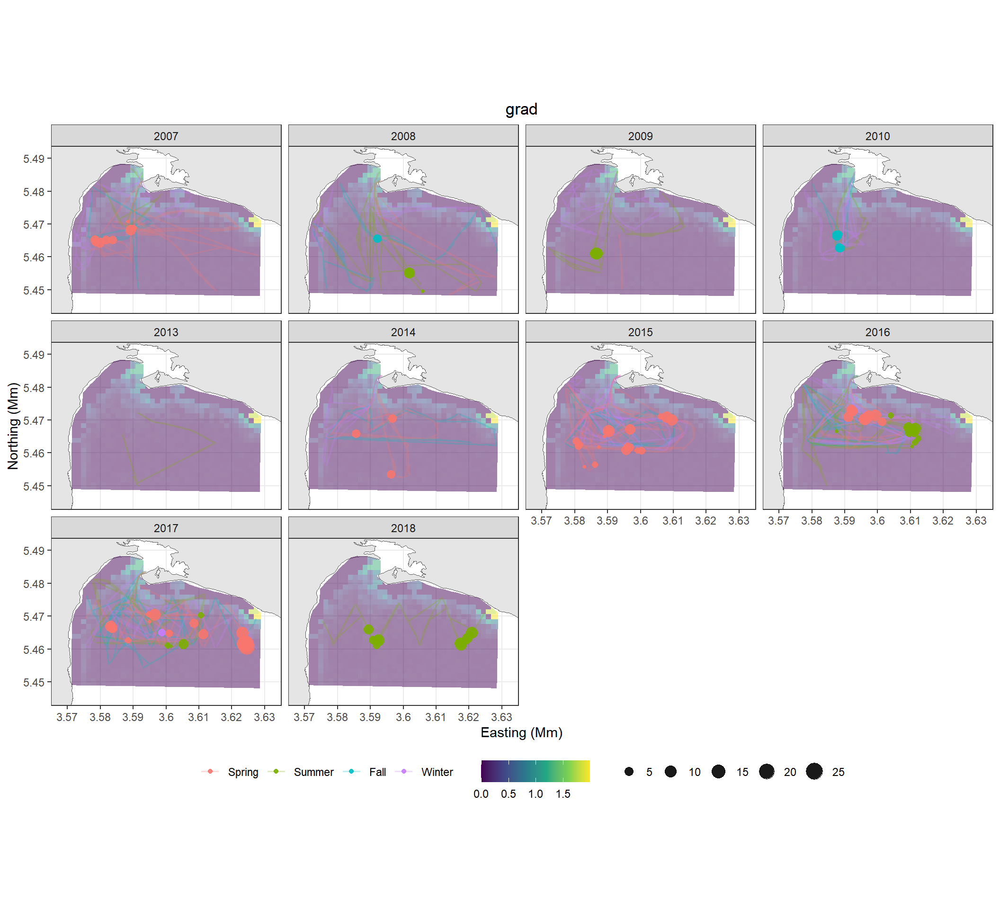
2.3.1.3 Gradiente de temperatura superficial
No parece infuenciar la deteccion de animales

2.3.1.4 Conclusion escala periodo
Evaluar la incorporacion de pendiente y profundidad en la funcion de deteccion - creo que codifican la misma informacion
2.3.2 Escala estacional
Ninguna de las variables ambientales medidas a escala estacional parece tener relacion con la deteccion de animales
2.3.2.1 Temperatura superficial del mar
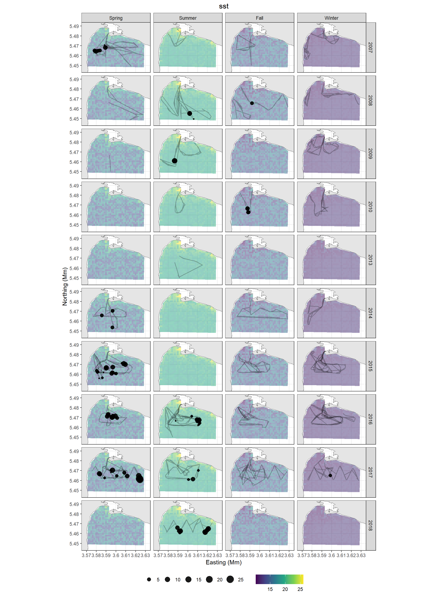
2.3.2.2 Clorofila
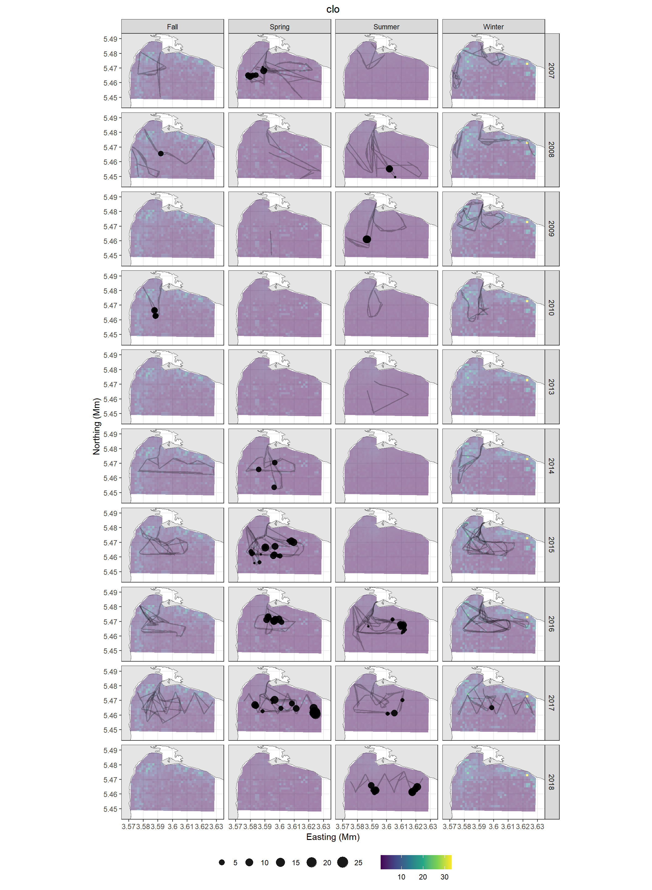
2.3.2.3 Distancia a upwellings
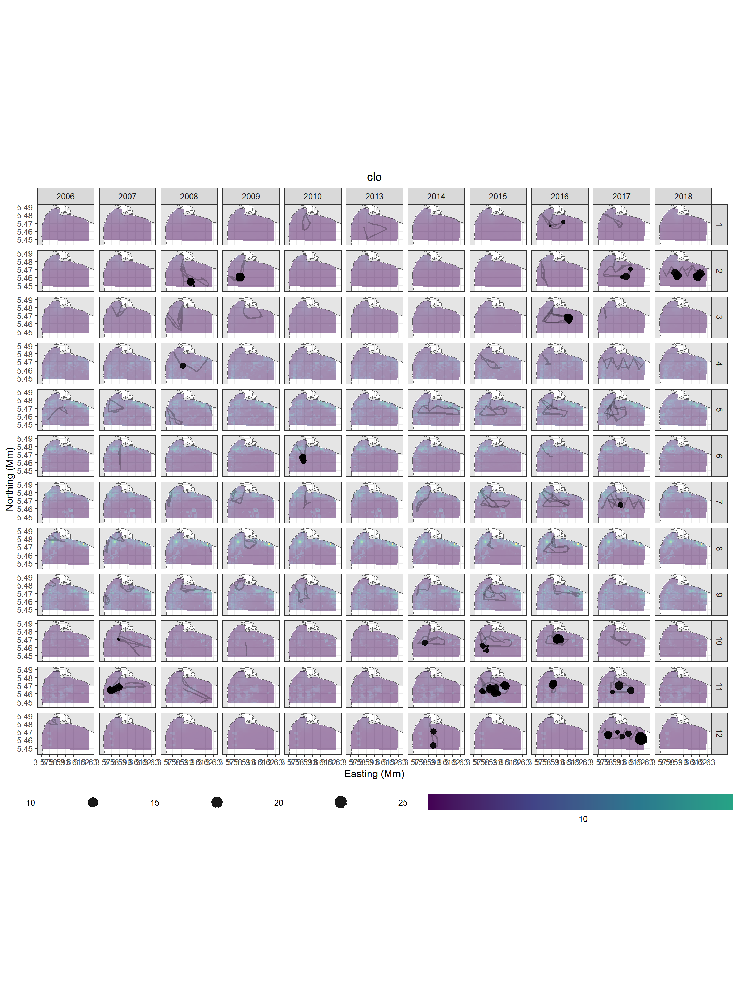
3 Funciones de deteccion
3.1 Datos
Eliminar una observacion con Beaufort = 4
3.2 Funciones de detección básicas
Ajustamos modelos half-normal y hazard rate
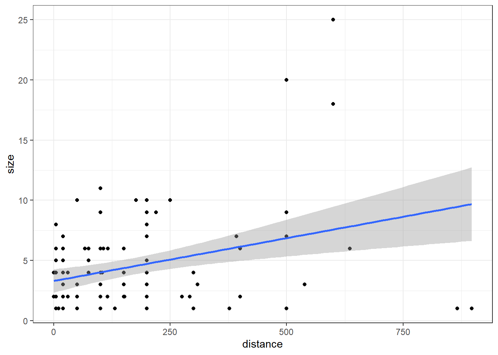
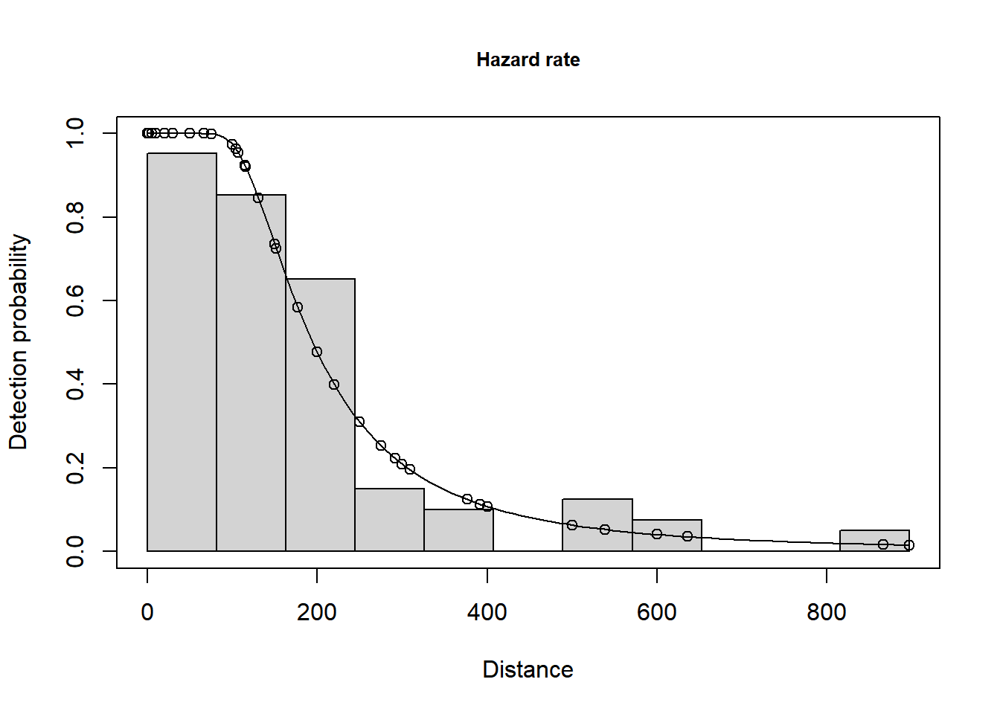
3.3 Truncar datos
Los datos tomados a una gran distancia a contribuyen poca información a la estimación de la forma de la función de detección a distancias cortas y puede resultar en un ajuste pobre y con varianza alta. Por ende, es práctica común truncar los datos.
Aquí se grafica el tamaño grupal como función de la distancia a la que fueron registrados. Se detectaron grupos hasta casi 900m de distancia de la trayectoria de la embarcación. Esto es un curioso, dado que los 2 grupos avistados a mas de 850m son de 1 delfín cada uno.
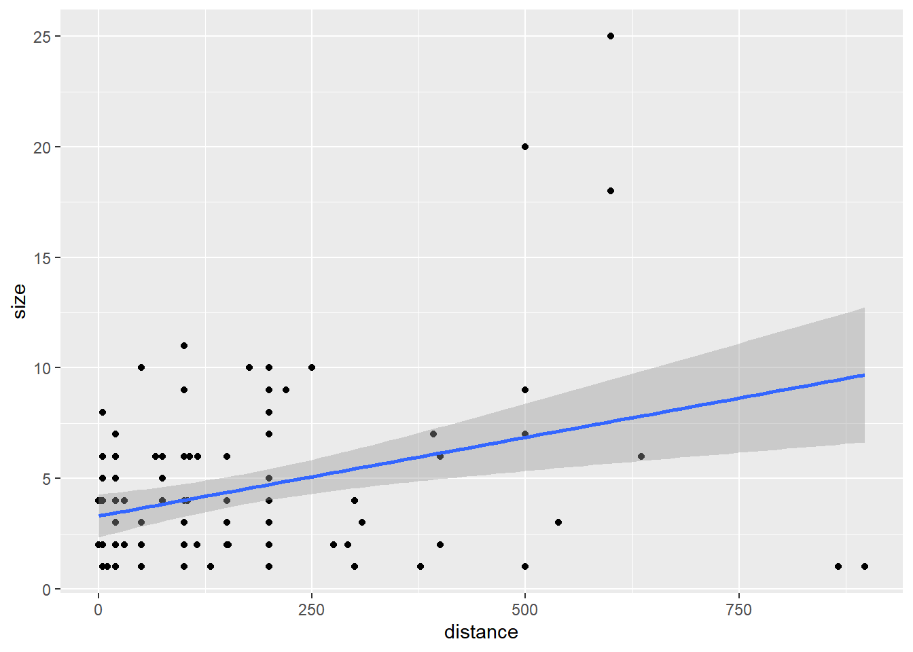
Consejo práctico recibido en curso de Distance Sampling: “consider reducing the truncation distance, w, if more than 5% of the Pa(zi) are <0.2, or if any are less than 0.1”. Probabilidades (Pa) pequeñas tienen mucha influencia en la estimación de abundancia, porque entran en el denominador del estimador Horvitz-Thompson.
Estas son las proporciones de observaciones con diferentes Pa (estimadas usando una función half-normal. 8% de las observaciones son menores a 0.2, y hay 6 observaciones con Pa < 0.1 (no mostrado en la tabla). Por ende, truncar los datos
| bin | n | prop |
|---|---|---|
| (0,0.2] | 10 | 0.08 |
| (0.2,0.4] | 4 | 0.03 |
| (0.4,0.6] | 6 | 0.05 |
| (0.6,0.8] | 26 | 0.22 |
| (0.8,1] | 72 | 0.61 |
Buckland et al. (2001) (p. 16) sugiere truncar donde la probabilidad de detección es ~0.15. Aquí se grafica la función de detección (half-normal). Esta distancia es ~450m. Al truncar a esa distancia, se eliminan 10 datos (~ 8.5% de los datos).
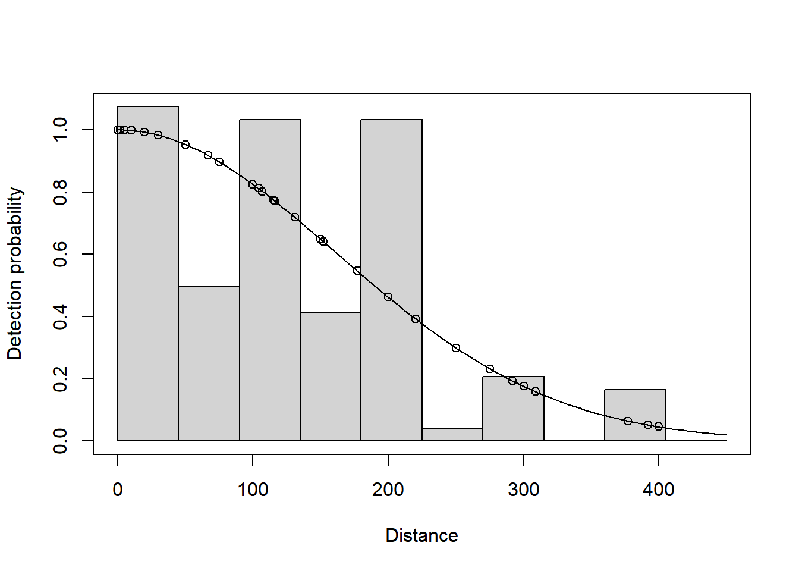
Ajustamos los modelos half-normal y hazard rate con los datos truncados. El modelo half-normal es mas parsimonioso.
| df | AIC | deltaAIC | |
|---|---|---|---|
| lo.df.hn.trun | 1 | 1250.3 | 0.00 |
| lo.df.hr.trun | 2 | 1251.8 | 1.51 |
3.4 Datos agrupados
Idealmente, las distancias transversales desde el trackline deben ser tomadas exactas. Sin embargo, es común que los observadores redondeen las distancias al tomarlas.
Este es un gráfico de las distancias a las que fueron tomadas las observaciones, con la función de detección half-normal (observaciones truncadas a 450). Se ve que las distancias fueron redondeadas en 0, 100, 200, 300, 400.

Buckland et al. (2015) (p. 68)
“The Montrave Case Study: Line Transect Sampling” :
[…] We see from Fig. 5.4 that there is rounding in the data. Seven distances were each recorded four times or more, and all are divisible by 5: 5, 15, 20, 25, 35, 45, 50 m […]
[…] To assess model fit, as distinct from revealing rounding in the data, we would like to select cutpoints both for our histogram and for the χ2 goodness-of-fit test to avoid these favoured distances. Here, we use the following cutpoints: 0, 12.5, 22.5, 32.5, 42.5, 52.5, 62.5, 77.5, 95 m. Note the use of wider intervals at larger distances, where smaller numbers of birds are detected […]
Aquí utilizamos una estrategia similar; elegimos puntos de corte 0, 50, 150, 250, 350, 450.
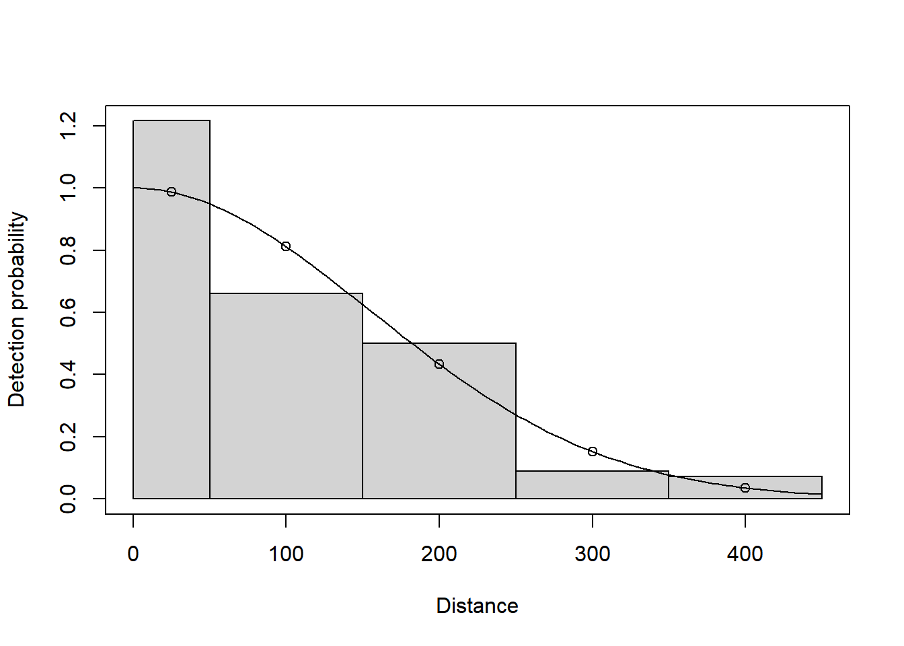
Ajustamos los modelos half-normal y hazard rate con los datos truncados y aplicando los cutpoints para lidiar con la agrupación de datos. El modelo half-normal es mas parsimonioso.
Utilizar el modelo half-normal.
| df | AIC | deltaAIC | |
|---|---|---|---|
| lo.df.hn.trun.cp | 1 | 299.2 | 0.00 |
| lo.df.hr.trun.cp | 2 | 302.3 | 3.04 |
3.5 Términos de ajuste
Distance allows the selection of three types of series (one type per model)
| Key function | Series adjustment |
|---|---|
| Uniform | Cosine |
| Half normal | Hermite polynomial |
| Hazard rate | Simple polynomial |
Aplicamos los terminos de ajuste a los modelos half-normal y hazard rate
Los modelos half-normal, con y sin termino de ajuste, no pueden distinguirse. Retener el modelo más sencillo.
| df | AIC | deltaAIC | |
|---|---|---|---|
| lo.df.hn.trun.cp | 1 | 299.2 | 0.00 |
| lo.df.hn.trun.cp.herm | 1 | 299.2 | 0.00 |
| lo.df.hr.trun.cp | 2 | 302.3 | 3.04 |
| lo.df.hr.trun.cp.poly | 2 | 302.3 | 3.04 |
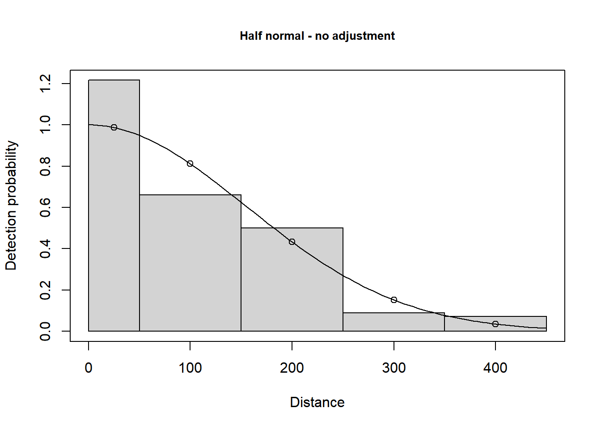
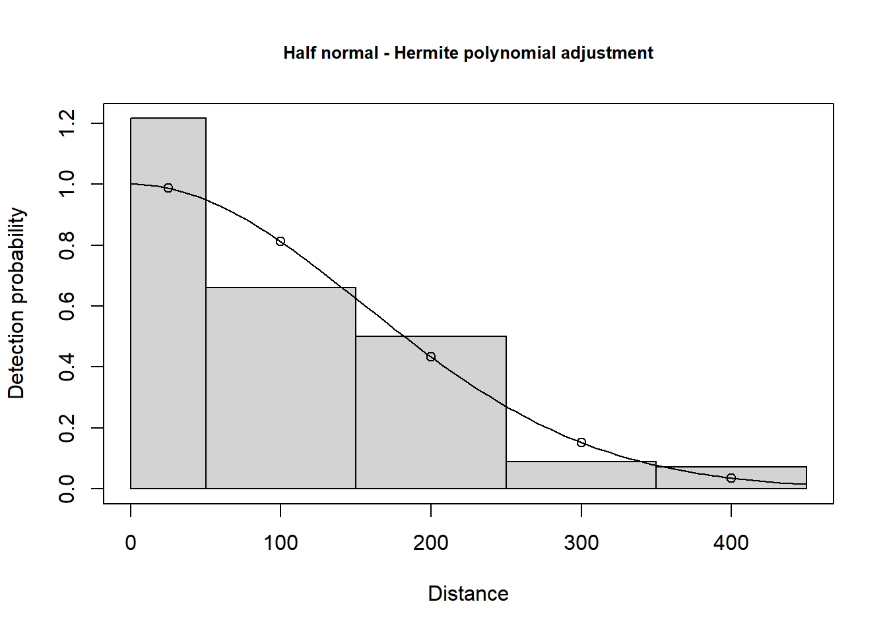
3.6 Covariables
Analizamos incluir
- embarcación
- tamaño grupal
- estado del mar (Beaufort)
en las funciones de detección
La función de detección mas parsimoniosa incluye el estado del mar
| df | AIC | deltaAIC | |
|---|---|---|---|
| lo.df.hn.trun.cp.beauf | 4 | 295.5 | 0.00 |
| lo.df.hn.trun.cp.sizebeauf | 5 | 296.9 | 1.37 |
| lo.df.hn.trun.cp.shipbeauf | 5 | 297.0 | 1.49 |
| lo.df.hn.trun.cp | 1 | 299.2 | 3.71 |
| lo.df.hn.trun.cp.size | 2 | 299.9 | 4.38 |
| lo.df.hn.trun.cp.ship | 2 | 301.2 | 5.68 |
| lo.df.hn.trun.cp.sizeship | 3 | 301.9 | 6.37 |
3.6.1 Efecto del estado del mar
Este es un gráfico de la función de detección considerando el efecto del estado del mar - la línea negra es la función de detección promedio.
Nótese que los patrones no siguen el patrón esperado; uno esperaría que con Beaufort 0 la detección a distancia fuese mayor. Sin embargo, es la función con peor detección
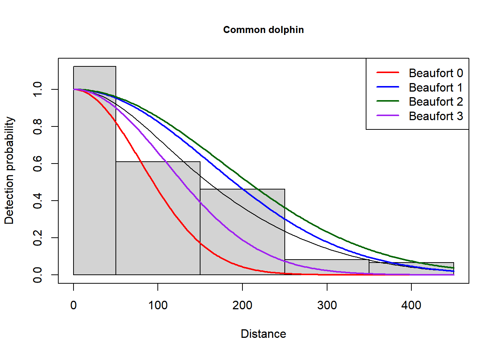
Probablemente sea un problema de tamaño muestral discriminado por estado del mar. Hay pocos registros en Beaufort 0, la mayoría de los registros fueron tomados en Beaufort 1 y 2, y las diferencias entre estas 2 curvas es mínima.
| beaufort_fct | n |
|---|---|
| 0 | 14 |
| 1 | 41 |
| 2 | 46 |
| 3 | 7 |
La forma de lidiar con esto es agrupar beaufort 0 y 1 en un grupo y 2 y 3 en un segundo grupo.
Ajustamos los modelos nuevamente. El modelo mas parsimonioso no incluye ninguna covariable
| df | AIC | ll | deltaAIC | |
|---|---|---|---|---|
| lo.df.hn.trun.cp | 1 | 299.2 | -148.6200 | 0.00 |
| lo.df.hn.trun.cp.size | 2 | 299.9 | -147.9568 | 0.67 |
| lo.df.hn.trun.cp.beaufgrp | 2 | 300.3 | -148.1283 | 1.02 |
| lo.df.hn.trun.cp.sizebeaufgrp | 3 | 300.4 | -147.1943 | 1.15 |
| lo.df.hn.trun.cp.ship | 2 | 301.2 | -148.6048 | 1.97 |
| lo.df.hn.trun.cp.sizeship | 3 | 301.9 | -147.9507 | 2.66 |
| lo.df.hn.trun.cp.shipbeaufgrp | 3 | 302.3 | -148.1274 | 3.01 |
3.6.2 Efecto de estado del mar, agrupado
Casi no existen diferencias entre las curvas
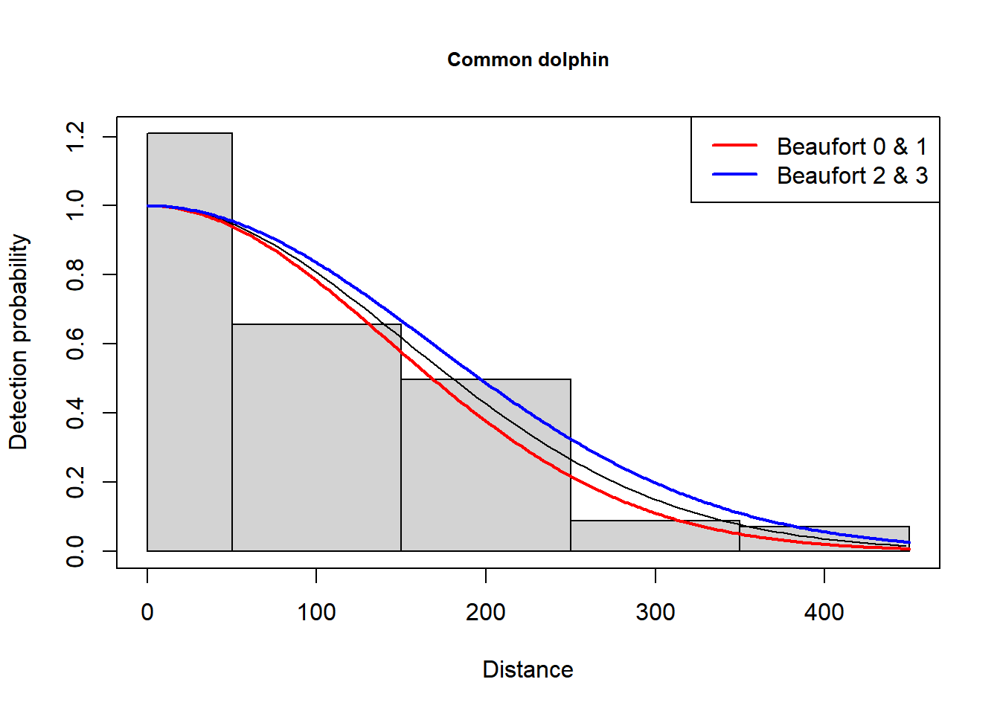
3.6.3 Efecto de embarcación
No existen diferencias entre las curvas de las dos embarcaciones.
Conclusión: no utilizar embarcación como covariable.
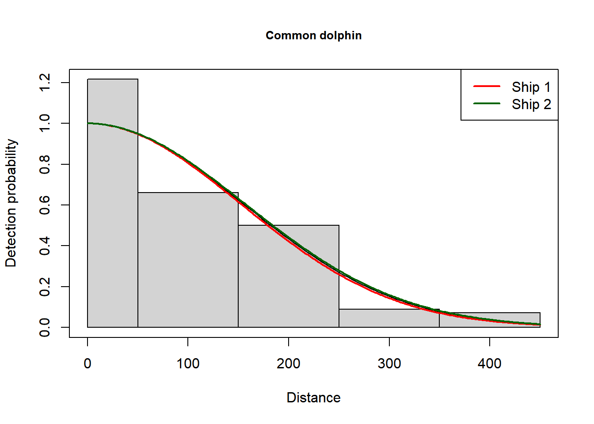
3.6.4 Efecto de tamaño grupal
Este es un gráfico de la función de detección considerando el efecto del estado del mar - la línea negra es la función de detección promedio.
Las líneas de colores representan la probabilidad de detección de grupos que representan los quantiles 10% (1 delfín), 50% (mediana: 3 delfines), y 90% (9 delfines) de tamaños grupales observados.
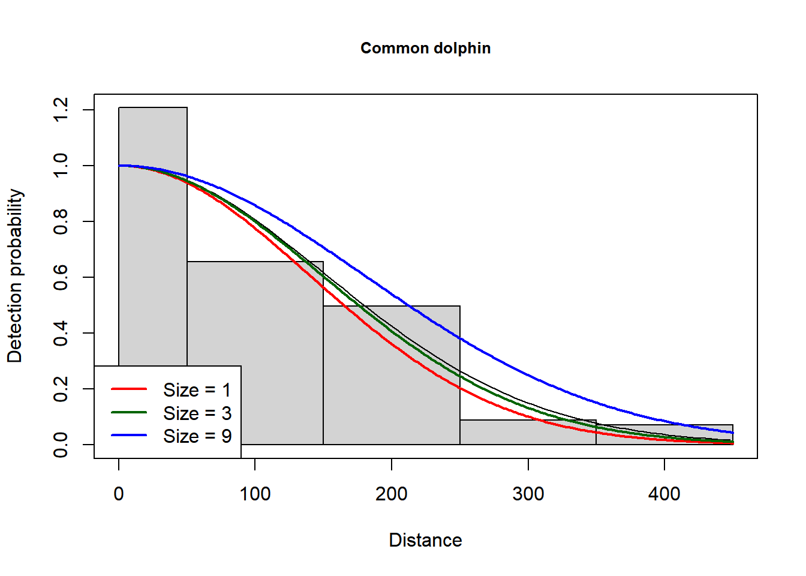
3.7 Conclusión de función de detección
Truncar en trunc.dist_lo: 450m - esto descarta 10 datos (~ 8.5% de los datos)
cutpoints: cutpoints_lo: 0, 50, 150, 250, 350, 450
Half normal
No adjustment term
No covariate
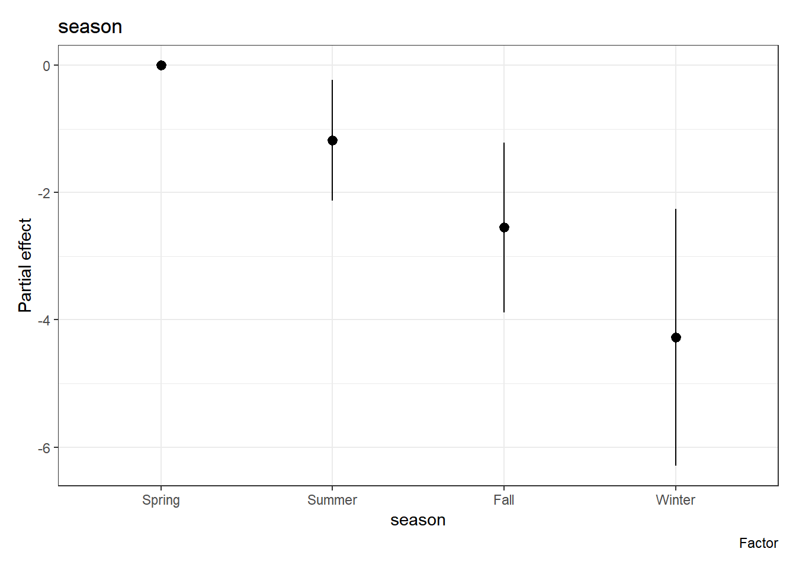
4 Density surface models
Miller et al. (2013):
area of segment j is Aj = 2wlj
lj es la variable segdata$Effort
w es la distancia de truncado trunc.dist_lo: 450m
Los largos de los segmentos lj en el objeto segdata son:
| Largo segmento (m) | n |
|---|---|
| 774 | 1 |
| 790 | 1 |
| 792 | 2 |
| 798 | 1 |
| 799 | 1 |
| 800 | 6282 |
Asumo que los segmentos menores a 800 m son los segmentos que llegan hasta los limites del area de estudio. Para simplificar, y dado que las diferencias son minimas, usare 800 m en todos los segmentos
4.1 Model selection
La columna Dev es la proporcion de deviance explicado por el modelo.
Notese que el modelo que tiene solo posicion + estacion explica el 32% del deviance. La inclusion de año mejora un poco capacidad del modelo, pero la mejora al incorporar las variables ambientales es marginal.
| model | df | deltaAIC | Dev |
|---|---|---|---|
| count ~ s(x,y) + season + s(Ano) + s(depth) | 30.31 | 0.00 | 0.39 |
| count ~ s(x,y) + season + s(Ano) + s(sst) | 29.55 | 3.10 | 0.38 |
| count ~ s(x,y) + season + s(Ano) | 28.22 | 3.45 | 0.37 |
| count ~ s(x,y) + season + s(Ano) + s(clo) | 29.21 | 4.86 | 0.38 |
| count ~ s(x,y) + season + s(Ano) + s(dist.up) | 28.88 | 5.75 | 0.37 |
| count ~ s(x,y) + season + s(Ano) + s(grad) | 30.47 | 6.34 | 0.38 |
| count ~ s(x,y) + season + s(Ano) + s(slope) | 31.89 | 7.86 | 0.38 |
| count ~ s(x,y) + season + s(depth) | 24.54 | 12.17 | 0.34 |
| count ~ s(x,y) + season | 22.17 | 16.62 | 0.32 |
| count ~ s(x,y) + season + s(grad) | 24.31 | 18.20 | 0.33 |
| count ~ s(x,y) + season + s(slope) | 25.11 | 18.41 | 0.33 |
| count ~ s(x,y) + season + s(clo) | 23.19 | 18.60 | 0.32 |
| count ~ s(x,y) + season + s(sst) | 23.33 | 18.68 | 0.32 |
| count ~ s(x,y) + season + s(dist.up) | 22.98 | 18.73 | 0.32 |
| count ~ s(x,y) + s(Ano) + s(sst) | 28.10 | 43.23 | 0.29 |
| count ~ s(x,y) + s(Ano) + s(depth) | 23.86 | 57.63 | 0.24 |
| count ~ s(x,y) | 20.43 | 58.15 | 0.22 |
| count ~ s(x,y) + s(Ano) + s(slope) | 21.75 | 59.52 | 0.22 |
| count ~ s(x,y) + s(Ano) + s(grad) | 23.81 | 59.57 | 0.23 |
| count ~ s(x,y) + s(Ano) | 21.38 | 60.27 | 0.22 |
| count ~ s(x,y) + s(Ano) + s(dist.up) | 25.08 | 60.29 | 0.24 |
| count ~ s(x,y) + s(Ano) + s(clo) | 22.33 | 62.28 | 0.22 |
4.2 Efectos parciales de estacion y año
Estos son los efectos parciales del modelo que incluye posicion, estacion y año.
4.2.1 Estacion
Hay un claro patrón: la densidad es máxima en primavera, y disminuye a lo largo del año
primavera > verano > otoño > invierno
El modelo toma a primavera como baseline, por eso la estimacion del parametro no tiene CI
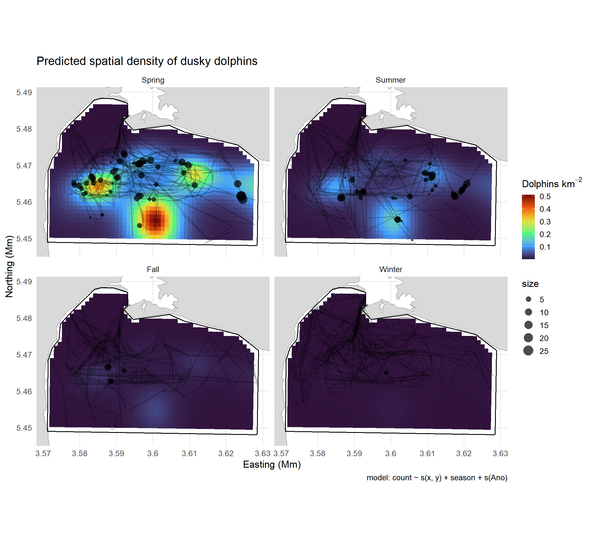
4.2.2 Año
No hay una tendencia clara, el efecto parcial sube y baja. Probablemente lo mas importante es que el intervalo de confianza siempre incluye cero, lo que indica que el efecto no es estadisticamente significativo. EL termino parece capturar fluctuaciones alrededor de una media

Tabla de ANOVA de este modelo. El termino de posicion tiene pvalue 0.25, el de ano 0.075, y el de estacion es muy pequeno
Family: Tweedie(1.31)
Link function: log
Formula:
count ~ s(x, y) + season + s(Ano) + offset(off.set)
Parametric Terms:
df F p-value
season 3 9.677 2.28e-06
Approximate significance of smooth terms:
edf Ref.df F p-value
s(x,y) 15.848 20.170 1.189 0.2534
s(Ano) 5.511 6.609 1.865 0.07534.3 Predicciones de densidad
Estos son mapas de predicciones de densidad en base a 2 modelos:
count ~ s(x,y) + season + s(Ano)
count ~ s(x,y) + season + s(Ano) + s(depth)- el modelo mas parsimonioso
4.3.1 Estación variable
Aqui grafico las predicciones a lo largo de las estaciones, usando 2015 como año de referencia
No veo gran diferencia entre las predicciones de los modelos.
Es muy claro el patron estacional.
Hay 3 focos de densidad de delfines en el area. La disposición espacial de alta densidad de delfines es similar entre las 2 especies, pero no identica

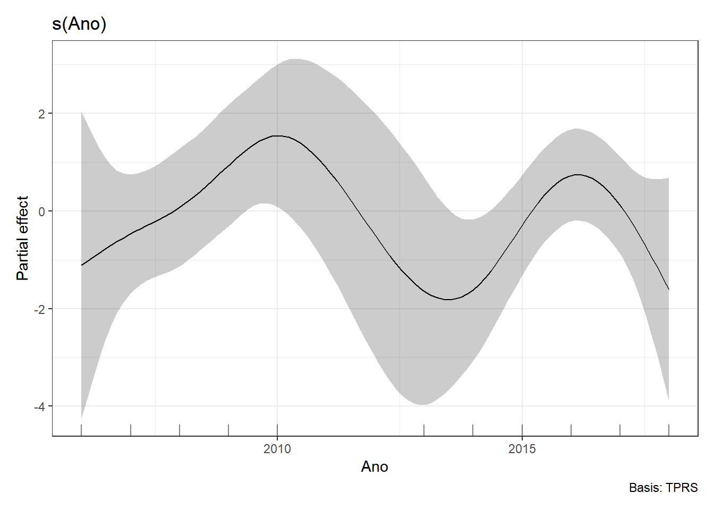
4.3.2 Año variable
Aqui grafico las predicciones a lo largo de los años, usando primavera como estacion de referencia - se pueden producir mapas estacionales + anuales
Se nota el efecto del año, con las intensidades subiendo y bajando a medida que pasan los años
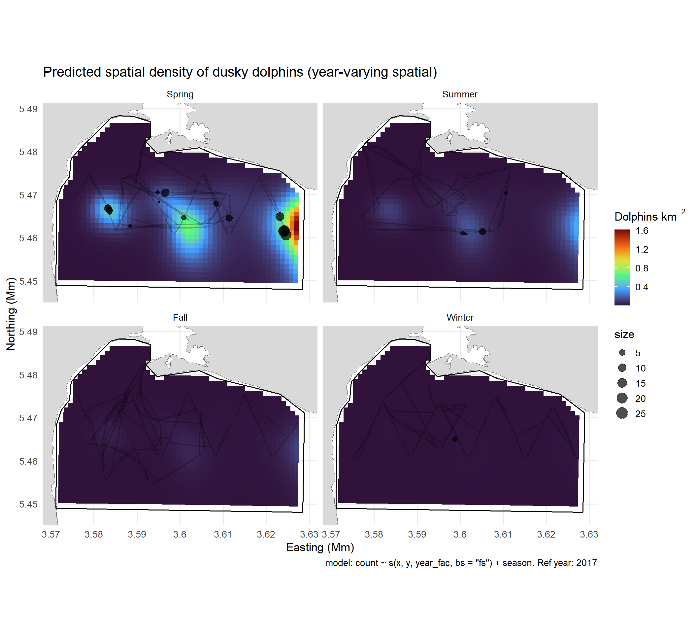
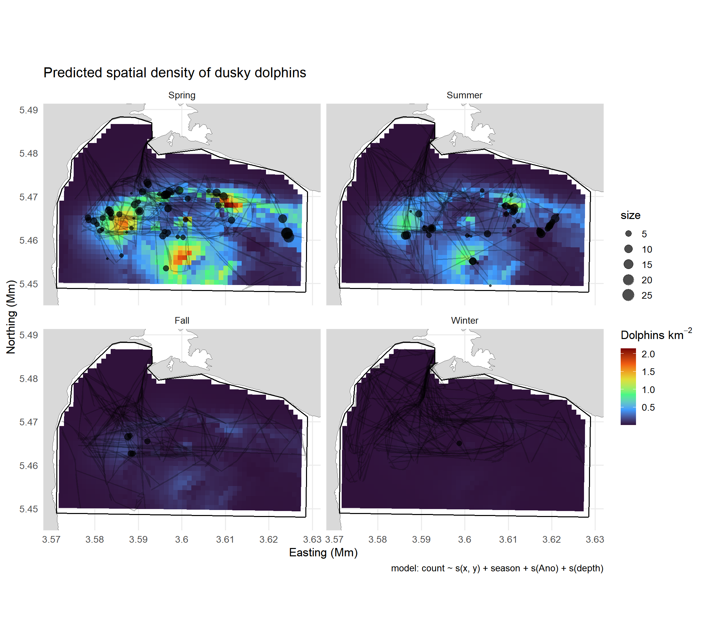
4.3.3 Notas
Los modelos ajustados son aditivos (no hay interaccion entre posicion y año o estación). Por ednde, todos los paneles muestran el mismo patron espacial. Se pueden ajustar modelos DSM con interacciones (e.g. te(x, y, Ano) or s(x, y, by = year_fac)) para que los patrones espaciales tengan variabilidad temporal. No lo hice porque creo que no era parte de los objetivos del paper, pero si fuera algo que te interesa, lo podriamos hacer.
No prepare mapas de la varianza de las estimaciones, pero en caso de querer presentar mapas, es algo que deberiamos hacer. Es sencillo, pero no quiero largarme a hacer mil mapas sin antes discutir que queremos presentar
5 Estimaciones de abundancia
Aqui presento estimaciones de abundancia estimadas usando density surface models (negro) y distance clásico (rojo). Los dos métodos utilizan la misma función de detección.
Nótese que las estimaciones hechas sin el componente espacial son mucho mas variables. Las 2 diferencias entre los modelos son:
- Componente espacial incluido en DSM
- Efecto de año incluido como una funcion smooth
Los ticks menores en el eje x representan las estaciones, en orden: verano, otoño, invierno, primavera.
Se notan claramente los efectos de
- temporada: primavera > verano > otoño > invierno
- Año: oscilaciones, por ej. abundancias mas altas en 2010 y 2017
6 Referencias
Buckland ST, Anderson DR, Burnham KP, Laake JL, Borchers DL, Thomas L (2001) Introduction to distance sampling: Estimating abundance of biological populations. Oxford University Press, Oxford.
Buckland ST, Rexstad EA, Marques TA, Oedekoven CS (2015) Distance sampling: Methods and applications. Springer, Cham.
Miller DL, Burt ML, Rexstad EA, Thomas L (2013) Spatial Models for Distance Sampling Data: Recent Developments and Future Directions. Methods in Ecology and Evolution 4:1001–1010.